portfolio

Lamp Bulb Robot
Personal project made for a poster to grab the attention of ecology problems. Sad old robot holding the last flower on the Earth.
Detailed

Captain metal
A 3d model of Captain Metal from the Sonic Universe spin-off comic. Pirate Plunder Panic.
Detailed
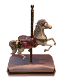
Carousel Horse
Part of the big project inspired by Chernobyl and few photographers of abandoned landscapes. “Apocalyptic Amusement Park” project is still in progress.
Detailed

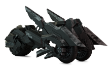
Black Rock Shooter Moto
The motorcycle from “Black Rock Shooter: The Game” The original concept is from Japanese Game.
Detailed

Steam Punk Gun
Details are what makes steampunk style, all gears are connecting to each other and make the 3D model work.
Detailed

Rick and Morty Space Ship
Focus of this work was on showing something from 2D cartoon world looks realistic.
Detailed


Whatermill Island
Fantasy level with steampunk elements. Including robots leaving on the island who are taking care of the watermill and the steampunk flying ship delivering stuff and material once in a while.
Detailed


Embroidered Lace Material
The material is made entirely in Substance Designer. Inspired by incredible artworks of Yumiko Higuchi
Detailed


Egyptian temple
Concept art of the Egyptian temple and Prop model inspired by unknown concept Arts
Detailed

Winry Rockbell
This is my version of Winry Rockbell from Full-metal Alchemist Brotherhood. It's in between realistic and stylized style which was fun to make.
Detailed
Apocalypse Motorbike
The apocalypse theme includes vehicles. Motorbike for 3 people with a unique shape and design
Detailed


King of Red Lions
This is a more realistic style version of the King of Red Lions from the game The Legend of Zelda: Wind Waker.
Detailed
Killer machine
Robotic with human shape brings science fiction feeling. She was made to be a killing machine.
Detailed

Mi Chau
Legendary princess of Vietnam history as a ball-jointed doll body. Doll appearance makes her more mysterious, demonstrates traditional Vietnamese clothes and culture.
Detailed
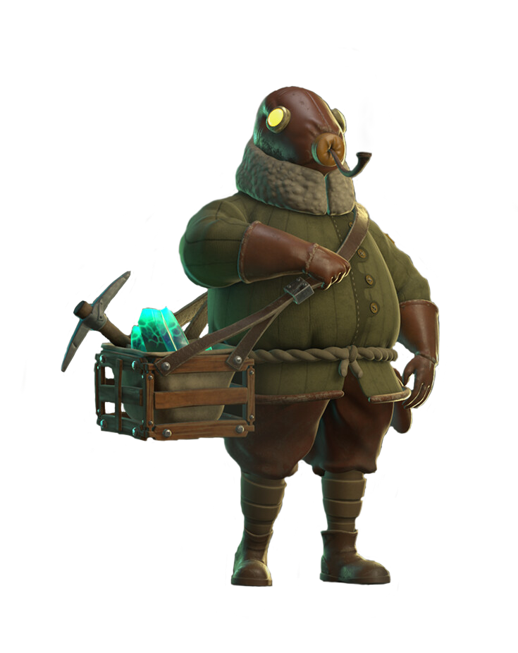
Little Mining Town
Personal project. it started with the main character "Dusty", then he was put into a little cute eerie mining island.
Detailed

Stave Church
An environment with an eerie, mysterious mood, having a stave church as the main building in the scene.
Detailed

Post-apocalyptic Props
Hunter's Gun and Mercys Knife. The project was developed to explore the post-apocalyptic aesthetic.
Detailed


 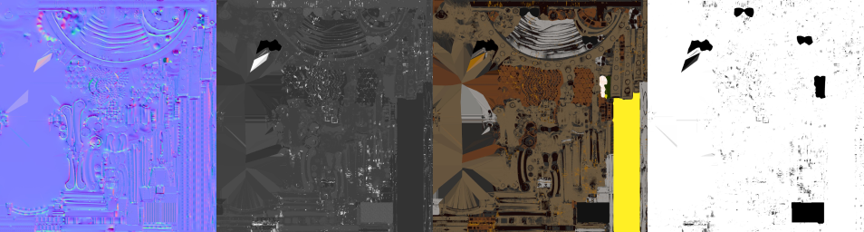
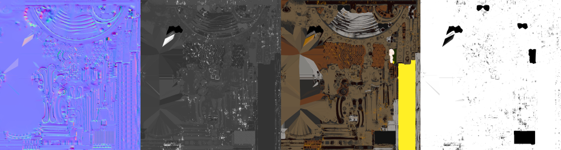


 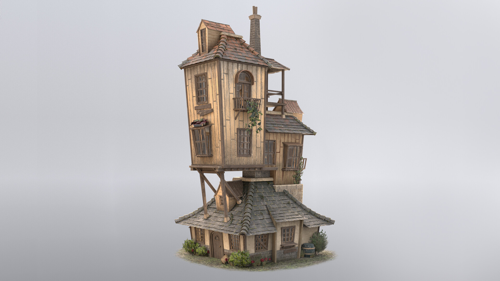
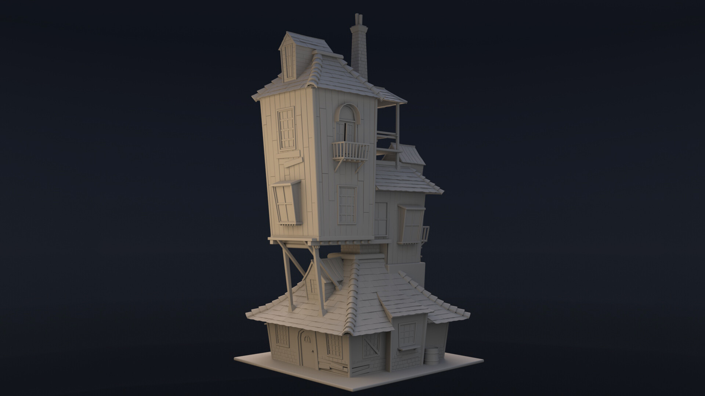
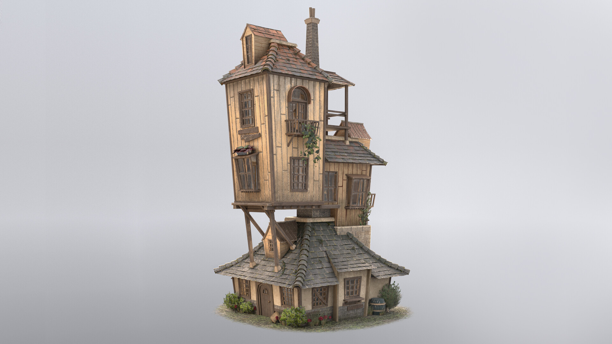
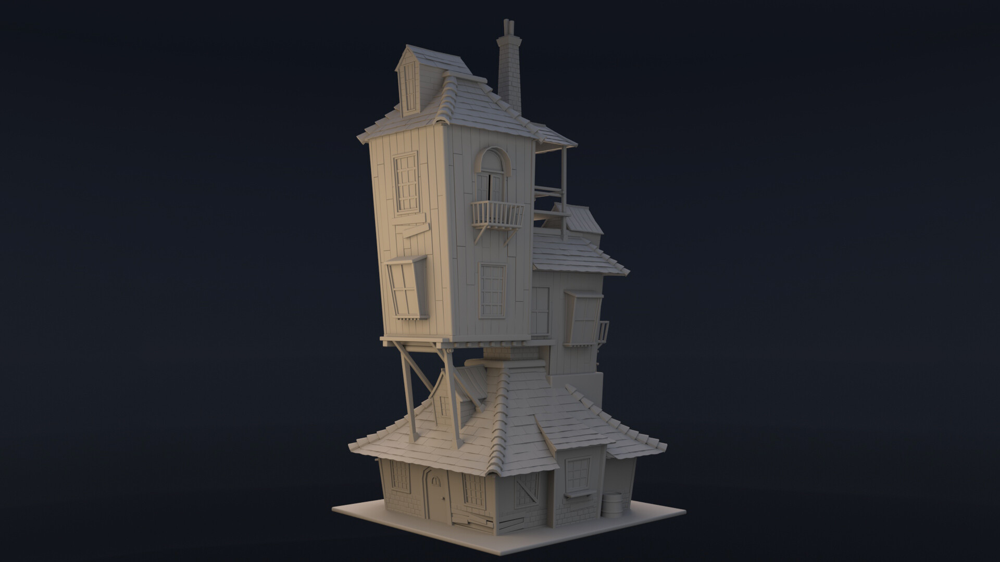

 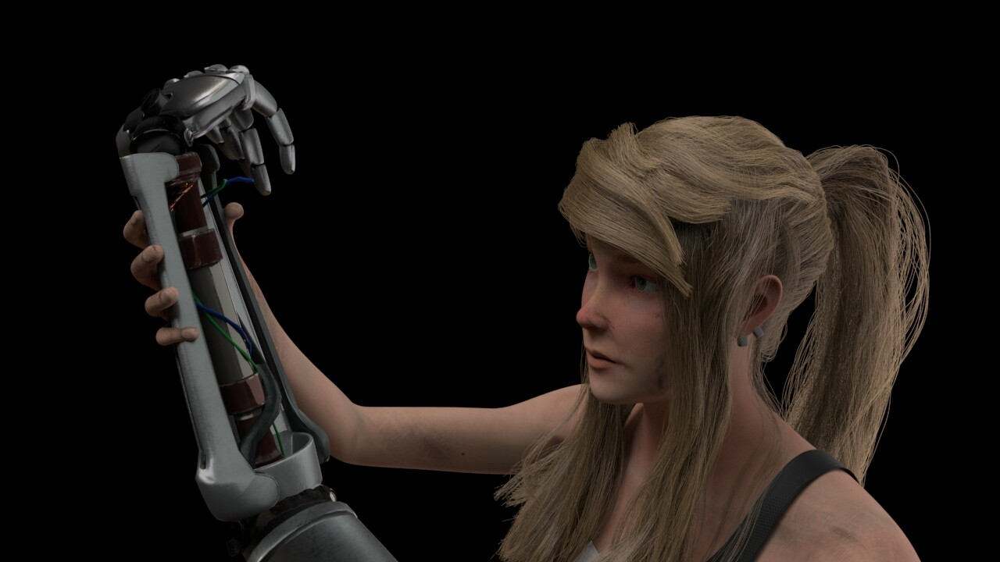
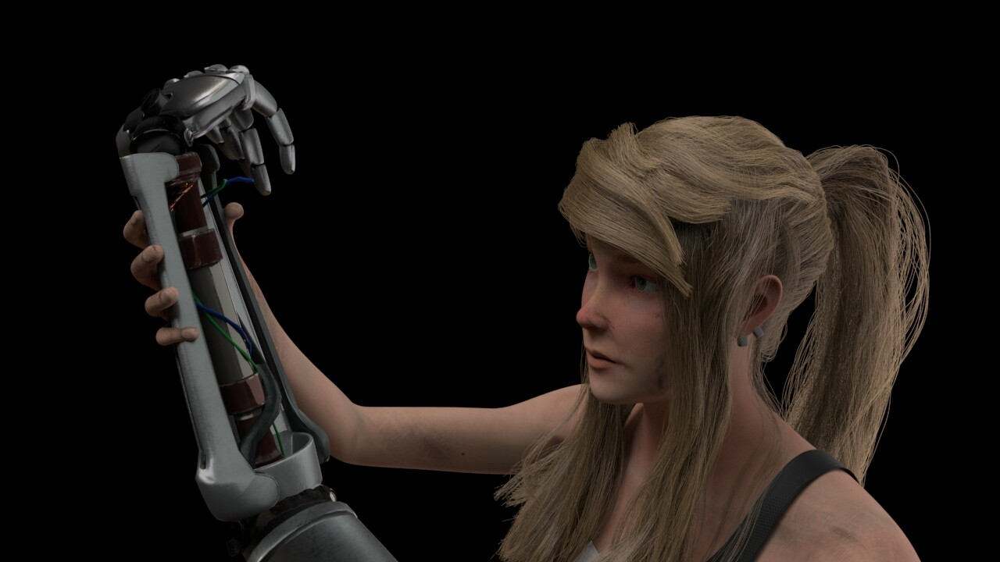